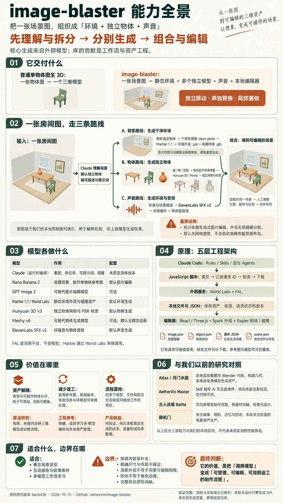

生成三维与声音
Marble 生成静态环境，Hunyuan 或 Meshy 生成独立物体，图片与声音模型负责清理、提取和配音。
外部能力IMAGE → WORLD / 源码研究
image-blaster 先理解和拆分画面，再借助外部模型分别生成静态环境、物体模型和声音，最后组合为可探索、可编辑的三维场景。
Claude 按 Rules / Skills 调度，脚本管理生成请求与本地资产。
价值在独立移动、替换和局部重做；布局仍需人工调整。

01 / POSITIONING
底层模型提供生成能力。这个仓库，把分散的能力变成了一条可操作的制作流程。
Marble 生成静态环境，Hunyuan 或 Meshy 生成独立物体，图片与声音模型负责清理、提取和配音。
外部能力Claude 按技能说明调度，脚本提交并续查请求，资产保存在本地，网页加载后交给用户调整。
工程贡献自动摆位、视觉与几何一致性、稳定验收仍有缺口。需要用真实任务记录成功率、修整时间与返工。
研究判断02 / UNDER THE HOOD
点选步骤，追踪输入、执行者、输出和能力边界。这里讲解源码，不运行生成请求。
先看原图：桌子、椅子和花瓶，还在同一张画面里。
原图展示了整个房间。此时椅子和花瓶都只是画面中的像素，不能作为独立物体移动或替换。
一张包含背景与物体的房间图，作为后续分析和图片编辑的输入。
接下来先确认要独立生成的物体，再为背景和物体准备不同的输入。
演示说明：房间图与三维对象由本网页预制绘制，步骤切换和花瓶版本用于讲解，不执行真实抠图或模型生成。环境用普通几何和点状外观示意，非 Marble 高斯泼溅输出；“摆入位置”使用预设布局，上游仍需人工调整。
脚本创建项目目录，把输入图片移入稳定的 source/，扫描已有资产，判断下一步需要做什么。
项目状态主要来自目录和 JSON 文件，不是独立数据库或常驻任务平台。
流程依赖：先清理背景，再生成环境；每个物体各自执行“参考图 → 三维模型”。后台代理允许多项任务并行，图中编号用于讲解主流程。
03 / MODEL RESPONSIBILITIES
以下接口和参数来自固定研究提交。FAL 是调用平台，World Labs 则单独提供环境服务。
| 模型 | 承担的工作 | 实际输入 → 输出 | 配置 |
|---|---|---|---|
| Claude运行时继承 | 看图、写描述、拆任务和调度 | 图片 / 指令 → JSON / 提示词 / 脚本操作 | 主控未固定具体版本 |
| Nano Banana 2FAL · 图片编辑 | 移除物体，制作单物体参考图 | 原图 + 提示 → 背景图 / 白底物体图 | 默认参考图路径 1K / 1:1 |
| GPT Image 2FAL · 图片编辑 | 替代图片编辑提供商 | 图片 + 提示，可带蒙版 → 编辑图片 | 可选medium / auto size |
| Marble 1.1World Labs · 世界生成 | 生成可探索的静态环境 | 背景图 + 文字 → .spz / 碰撞 .glb / 全景 | 默认marble-1.1 |
| Hunyuan 3DFAL · hunyuan3d-v3 | 生成独立物体网格与材质 | 单物体参考图 → 模型资产 | 默认50,000 面 / PBR / Normal |
| Meshy v6FAL · 物体生成 | 替代物体生成提供商 | 单物体参考图 → 模型资产 | 可选30,000 面 / 默认无绑定动画 |
| ElevenLabs SFX v2FAL · 声音生成 | 生成环境音和物体短音效 | 文字描述 → 循环音频 / 交互音效 | 默认非循环音频经 FFmpeg 处理 |
生成需要 WORLD_LABS_API_KEY 与 FAL_KEY。此研究网页不读取密钥、不调用接口；模型配置不代表当前服务可用性、价格或效果保证。查看精确接口名 ↗
04 / ASSET ENGINEERING
把“物体是谁”“请求到哪一步”“场景怎么摆”分开保存，才能局部重做、继续任务和追溯结果。
project.json项目身份image.json图像分析scene.json用户布局source/原图 / 清理背景output/world/环境资产0-world-full_res.spz外观0-world.glb碰撞output/vase/独立物体object.json身份与意图0-vase.png / .glb参考与模型.0-vase__model-request.json请求状态output/sfx/环境音示意结构 · 编号保存版本，JSON 保留来源。
05 / CONNECT THE RESEARCH
它们都使用 AI，却在不同的层次解决问题。比较的是方法与产物，不是未经实测的模型性能。
专用模型生成静态背景与独立物体，视觉细节很大程度由模型决定。布局和尺度仍需要调整。
我们的月门水庭实验由 AI 理解参考图并编写 Blender Python，输出可编辑工程与 GLB，未调用专用图生三维服务。
规整建筑和布局适合参数化代码，有机道具可探索生成模型。两条路线均会补全不可见内容，都不能直接视作精确重建。
范围：Atlas 上游支持多条路线；这里只比较我们实际选用的脚本建模实验。该实验已有真实渲染与网页交互证据，image-blaster 本轮未实测生成。
查看既有研究记录 ↗| 项目 | 产物 | 核心机制 | 模型依赖 | 验证到哪一步 |
|---|---|---|---|---|
| image-blaster本轮 / 002 | 环境 + 物体 + 声音 | Skill 调度专用模型，落地资产 | 生成时调用多类模型 | 源码 / 网页已核对 生成效果待实测 |
| Atlas / 月门水庭1014 / 007 | 脚本、.blend、GLB | 本地实验采用代码建模 | AI 写脚本；本实验未用专用图生 3D | 实际几何 / 渲染 / 网页交互 |
| 古人说唱 Battle1014 / 011 | 逐句素材与成片 | 时间轴、生成、检查、选片与剪辑 | 外部音乐、制图与视频服务 | 源码 / 原作引用 / 网页 付费制作待实测 |
| AetherViz Master ↗本仓库 / 001 | 互动课件代码 | Skill 指导 AI 编写网页 | 制作时写代码，课件运行无需 AI | 三个固定课件已运行 |
| 随机门1014 / 006 · 原创体验研究 | 偶遇、互动、手记与回访 | 预制场景、规则和随机分配 | 原画制作时生成，原型运行不调模型 | 本地交互；留存与情绪效果待验证 |
依据：本仓库 001，以及以前研究仓库中 007、011、006 的本地记录。月门水庭和随机门包含原创实验，不把本地实现统一当成上游库能力。阅读完整比较 ↗
06 / OUR ASSESSMENT
“调用外部模型”不能单独决定价值。要看它是否稳定减少了人工、返工和失败损失。
没有提供自研图生三维模型、训练方法或权重。想掌握生成原理，应继续研究底层模型和表示。
前景与背景分开、参考与模型分开、任务记录与资产分开，都是可迁移的工程做法。
需要验证生成结果、尺寸对齐、人工修整和加载性能，才能判断是否比手动调用更高效。
下一步若投入实测，先做一个背景、一个物体、一组声音，记录人工时间、重做次数、恢复结果与最终验收；再决定是否扩展。
没有布局记录时，物体按网格排列；单图的隐藏部分、比例和三维位姿仍需补全与调整。
背景用碰撞网格，物体主要用盒形碰撞体；动态不等于自动绑定、动画或行为智能。
主流程主要根据文件与请求状态判断完成，缺少完整的视觉、几何一致性自动验收。
故事、谜题、回应、记忆和回访仍需要产品设计。随机门研究说明了这部分独立工作。
07 / NEXT POSSIBILITIES
以下是基于现有架构的研究建议，尚未实现或验证。先验证一个背景、一个物体的完整流程，再增加自动化。
检查背景残留、物体重复、网格缺损与尺度冲突，展示多角度候选图，由人工确认后进入组装。
验收：记录首次通过率、修整时间和局部重做次数。结合深度、物体尺寸和接触关系给出初始位置与比例，保留人工校正；单图隐藏内容仍需补全。
验收：对照原图，检查落地、穿插、尺度和相机一致性。在已有请求记录上增加费用、耗时、预算上限、失败原因和取消/重试控制，比较手动调用的总成本。
验收：中断恢复能否复用请求，是否避免重复付费生成。建筑和规则布局用 Blender 脚本构建，有机道具交给生成模型，统一坐标、单位、材质与碰撞后组合。
验收：真实尺寸、编辑便利性和碰撞质量，而非只看一张效果图。围绕独立物体增加可操作规则、剧情触发、谜题、记忆与回访，让生成资产承载具体体验。
验收：用户能否理解目标、完成互动并愿意再次进入。在本地文件工作流之外设计持久存储、服务端生成队列、访问控制与多人版本管理。
验收：刷新与跨设备可恢复；静态 Pages 本身不提供这些后端能力。这些方向会增加工程投入，不能预先当作仓库已有能力或生产收益。阅读完整扩展路线与验收方法 ↗
08 / EVIDENCE & SCOPE
源码事实、既有实验和研究推断，保持各自的边界。